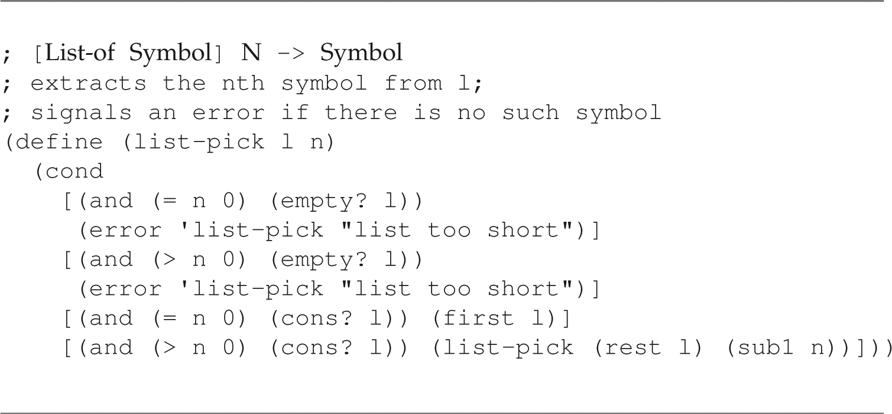
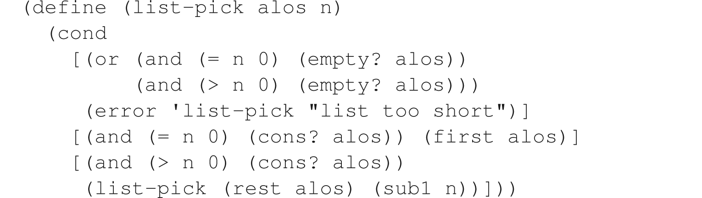
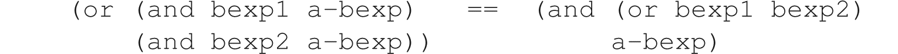
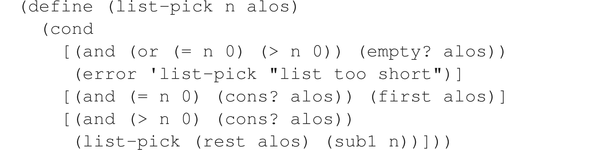
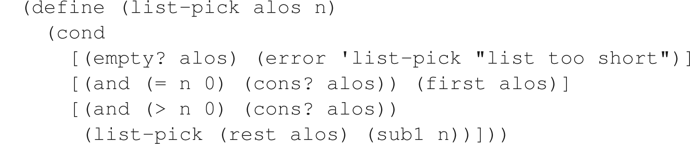
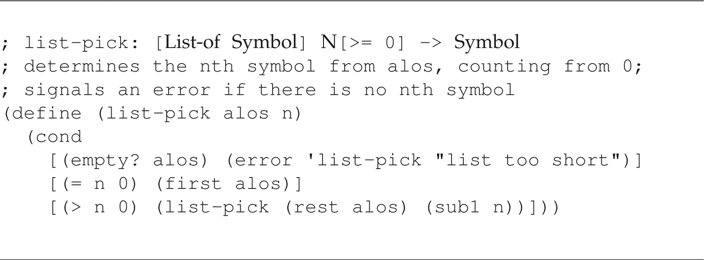

23.4 Function Simplification
The list-pick function in figure 134 is far more complicated than necessary. The first two cond clauses signal an error. That is, if either

Figure 134: Indexing into a list
(and (= n 0) (empty? alos))
or
(and (> n 0) (empty? alos))
holds, the answer is an error. We can translate this observation into code:

To simplify this function even more, we need to get acquainted with algebraic laws concerning Booleans:

These equations are known as de Morgan’s laws.
A similar law applies when the sub-expressions of the ands are swapped. Applying these laws to list-pick yields this:

Now consider (or (= n 0) (> n 0)). It is always #true because n belongs to N. Since (and #true (empty? alos)) is equivalent to (empty? alos), we can rewrite the function again:

This last definition is already significantly simpler than the definition in figure 134, but we can do even better than this. Compare the first condition in the latest version of list-pick with the second and third. Since the first cond clause filters out all those cases when alos is empty, (cons? alos) in the last two clauses is always going to evaluate to #true. If we replace the condition with #true and simplify the and expressions again, we get a three-line version of list-pick
Figure 135 displays this simplified version of list-pick. While it is far simpler than the original, it is important to understand that we designed the original in a systematic manner and that we were able to transform the first into the second with well-established algebraic laws. We can therefore trust this simple version. If we try to find the simple versions of functions directly, we sooner or later fail to take care of a case in our analysis, and we are guaranteed to produce flawed programs.

Figure 135: Indexing into a list, simplified
Exercise 391. Design replace-eol-with using the strategy of chapter 23.3. Start from the tests. Simplify the result systematically. 
Exercise 392. Simplify the function tree-pick from exercise 390.